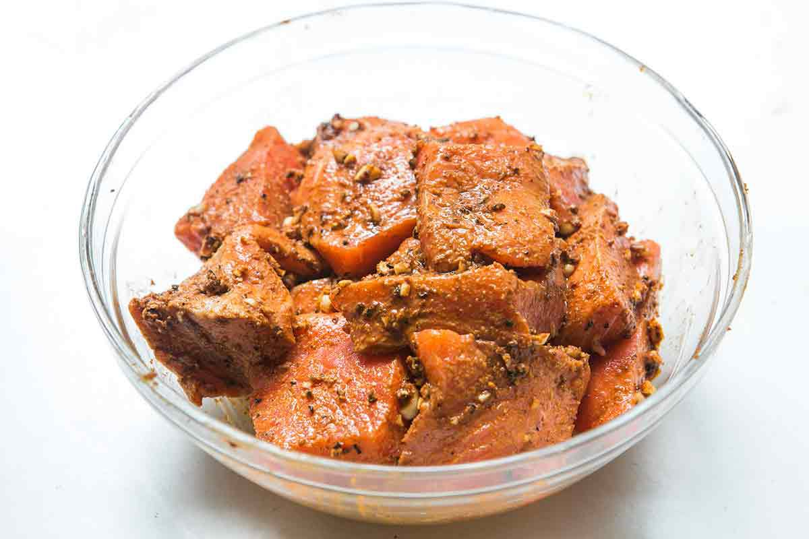
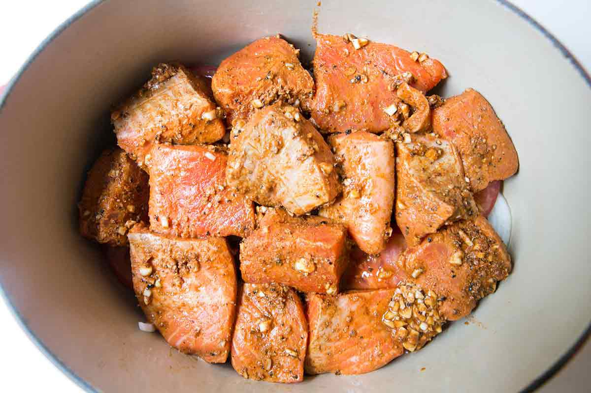
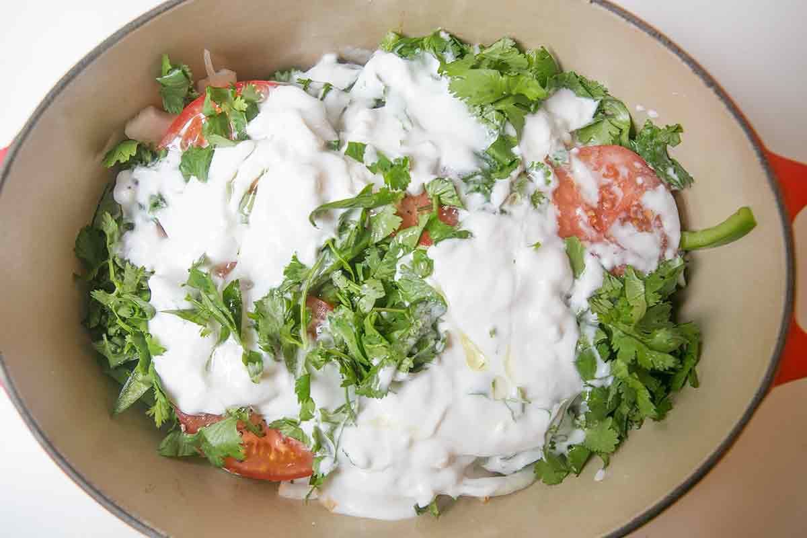
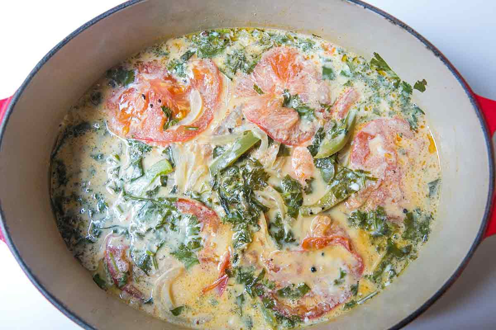

Image: Elise Bauer
Moqueca hails from the state of Bahia in northeastern Brazil, the heart of Afro-Brazilian culture and its rich culinary heritage. Built on the freshest seafood you can find, moqueca delivers a creamy, spicy richness with just a few central ingredients. The dish begins with a base of sautéed garlic, onion, tomatoes and sweet peppers. A fresh chile adds heat that will linger gently, and coconut milk gives the stew body. Red palm oil (azeite de dendê in Portuguese) acts as the glue that holds this dish together.
What is surprising about the recipe's method is that you simmer the stew for a good 30 minutes at least. For those of us who love seafood, we know that fish and long cooking times do not go well together. This stew is an exception. It requires simmering the stew well past the point of of cooking the salmon, but it works!
In a medium bowl, combine the garlic, lime juice, coarse salt, sweet paprika, cumin, and the black pepper. Let the salmon marinate in this paste for at least 2 hours. The longer, the better.
Coat the bottom of a large covered skillet or Dutch oven with a couple tablespoons of olive oil. Add a layer of sliced onions, then a layer of sliced bell peppers, and then a layer of sliced tomatoes.
Place the fish pieces with the marinade, on top of everything, and start layering again—onions, bell peppers, and tomatoes.
Sprinkle generously with salt and pepper. Add about half of your fresh cilantro on top.
Pour coconut milk over everything. Drizzle generously with olive oil over the top (several tablespoons).
Bring to a boil. Reduce the heat to low, cover and let simmer for 30 minutes to an hour, until the vegetables are cooked through.
Serve hot in individual bowls, garnished with the remaining cilantro.